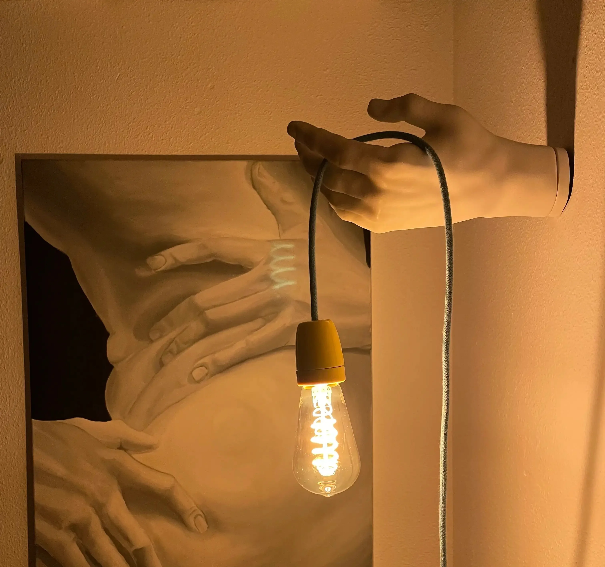

ILUSTRACIÓN
Ilustración tradicional y digital, con personajes alocados y colores vivos que transmiten el buen rollo que quieres en tu espacio. Llevo 6 años creando ilustraciones para las colecciones de Sahil Aneja. A través de esta colaboración mis diseños han aparecido en revistas como Vogue o GQ.

MURALES
En el muralismo he encontrado una forma unir mi pasión por el arte y la mejora del espacio público. Una forma de combinar arte y arquitectura, de sacarlos a la calle y ponerlos al alcance de todos. He pintado para ayuntamientos y empresas en varios lugares de Extremadura, en Girona y en la ciudad de Copenhague.

ARTE FUNCIONAL
Arte que llevas puesto, te ilumina una estancia o te sirve para colgar la chaqueta cuando llegas a casa. Pero todo esto, de una forma única.